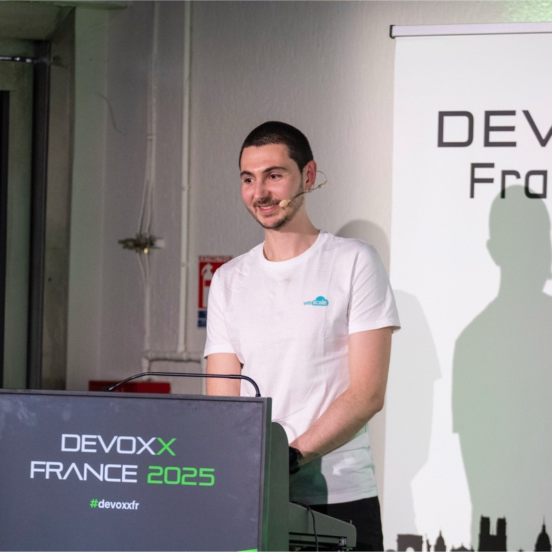

Tester c'est douter ? Alors doutons de notre infra
« Si ton code compile, c'est qu'il marche. » Aucun développeur n'oserait dire ces mots aujourd'hui. Pourtant, dans le monde de l'Infrastructure as Code, nous nous contentons trop souvent d'un « terraform apply » réussi comme preuve de qualité. Un port ouvert par erreur, une règle IAM trop permissive ou un groupe de sécurité manquant ne font pas échouer le déploiement...
Depuis des années, les Ops ont adopté les outils des développeurs (Git, CI/CD, peer review), mais nous avons oublié l'essentiel : la culture du test. Dans ce talk, Antoine propose quatre étapes pour entamer cette transformation : ce que l'infra peut apprendre du monde des devs, pourquoi les tests restent les grands absents côté ops, comment traiter l'infrastructure comme un produit à part entière, et quelles stratégies adopter entre linting, tests unitaires et tests end-to-end.
Apprenons à douter de notre infra, pour enfin pouvoir lui faire confiance.
